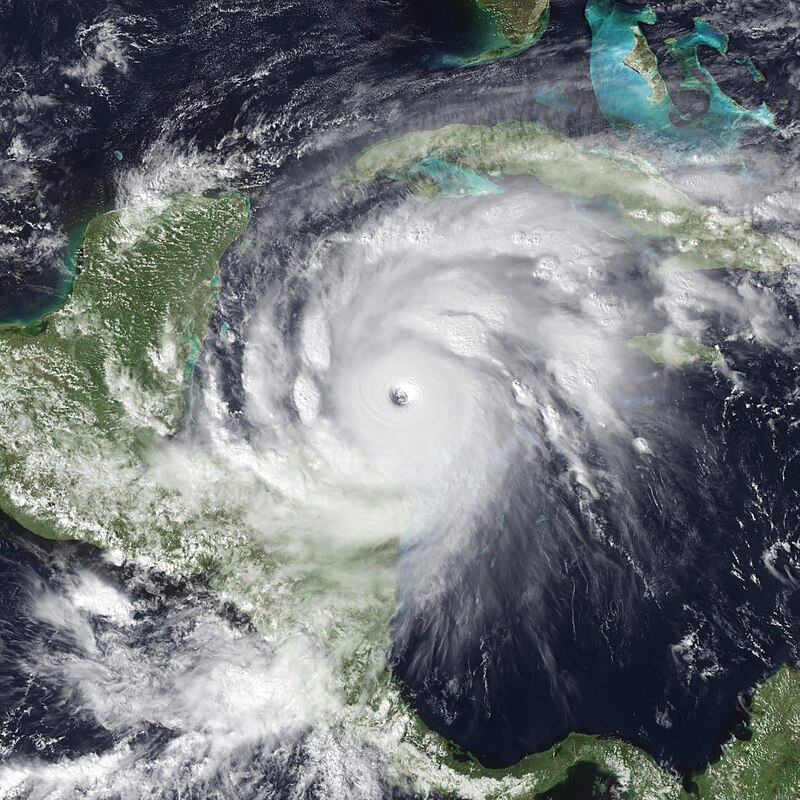
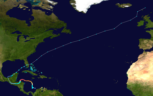

Huracán Mich
El huracán Mitch fue uno de los ciclones tropicales más poderosos y mortales que se han visto en la era moderna. Teniendo una velocidad máxima de vientos sostenidos de 290 km/h, el Mitch pasó por América Central del 22 de octubre al 5 de noviembre en la temporada de huracanes en el Atlántico de 1998. También causó miles de millones de dólares en pérdidas materiales.
El Mitch se formó en el oeste del mar Caribe el 22 de octubre,3 y después de pasar por condiciones extremadamente favorables, alcanzó rápidamente la categoría 5, el nivel más alto posible en la escala de huracanes de Saffir-Simpson. Después de desplazarse hacia el suroeste al mismo tiempo que se debilitaba, el huracán golpeó Honduras como un huracán de categoría menor. Se movió a través de Centroamérica hasta alcanzar la bahía de Campeche para finalmente golpear Florida como una tormenta tropical
Trayectoria de Mitch
Comenzó como una onda tropical proveniente de África. el 10 de octubre. Posteriormente se movió a través del océano hasta entrar en el mar Caribe, comenzando a organizarse al norte de Colombia. Se convirtió en depresión tropical el 22 de octubre a 95 km al noroeste de Cartagena, Colombia y a 670 km al sur de Kingston, Jamaica. Como depresión se movió lentamente hacia el oeste, hasta que se convirtió en tormenta tropical, siéndole asignado el nombre de «Mitch».
Mitch siguió moviéndose lentamente y se convirtió en huracán el 24 de octubre a 475 km al sur-suroeste de Kingston. Empezó a intensificarse rápidamente, y el 26 de ese mismo mes se convirtió en un huracán de categoría 5. El ojo del huracán se movió de forma paralela a la costa de Nicaragua y Honduras. Mitch pasó sobre las Islas del Cisne el 27 de octubre, y se debilitó conforme se acercaba a Honduras. El huracán tocó tierra el día 29 a 70 millas náuticas de La Ceiba como un huracán aún de categoría 5. El 30 de octubre, en Nicaragua, las lluvias provocaron el deslave de lodo del volcán Casita, en el municipio de Posoltega, departamento de Chinandega, muriendo alrededor de 2000 personas.5 Ahora, al haber tocado tierra, el huracán empezó a debilitarse del tal manera que se convirtió en depresión tropical sobre Guatemala el día 31 de octubre.
Impacto
De acuerdo al Comité Nacional de Emergencias la mayoría de las muertes ocurrieron como consecuencia del deslizamiento del Volcán Casitas sobre diez comunidades. Además, se ha estimado que alrededor de 867.752 personas fueron afectadas en todo el país en diversos grados.
A pesar de que Mitch nunca entró a Nicaragua, su impacto en el país fue devastador debido a que desencadenó el fenómeno conocido como Nate Effect. Este fenómeno se produce cuando un huracán, al desplazarse sobre aguas cálidas, genera un frente de humedad que se desprende del sistema principal y se dirige hacia tierra firme.
Resumen final de los efectos del huracán Mitch sobre la población nicaragüense
| Región | Familias | Adultos | Niños | población | Heridos | Muertos | Desaparecidos |
|---|---|---|---|---|---|---|---|
| I | 21,651 | 68,762 | 50,053 | 118,815 | 51 | 360 | 0 |
| II | 78,800 | 241,604 | 206,605 | 448,209 | 254 | 2,316 | 426 |
| III | 3,350 | 10,087 | 8,252 | 18,339 | 10 | 0 | 0 |
| IV | 6,371 | 21,110 | 17,267 | 38,377 | 2 | 0 | 0 |
| V | 898 | 2,921 | 2,515 | 5,436 | 7 | 0 | 0 |
| IV | 34,670 | 104,097 | 86,498 | 190,577 | 123 | 98 | 0 |
| RAAN | 5,987 | 18,142 | 15,351 | 34,493 | 0 | 0 | 0 |
| RAAS | 2,106 | 6,322 | 7,184 | 13,506 | 6 | 1 | 0 |
| Total | 153,833 | 473,027 | 394,725 | 867,752 | 434 | 2,774 | 426 |
los daños indirectos sobre la producción de bienes y servicios y la desaceleración del desarrollo nacional, que a su vez se reflejarán negativamente sobre el comportamiento de otros importantes agregados económicos (empleo, PIB, inflación, etc.) para revelarnos la magnitud real de las secuelas del meteoro sobre el desarrollo de Nicaragua, país que, por añadidura, aún no termina de superar otras emergencias anteriores. Alrededor del 50% de los daños directos correspondieron a infraestructura vial y un 37% a pérdidas en viviendas de todo tipo
En el sector de la salud, los daños directos ocupan el tercer lugar, aproximadamente un 6,5% de las estimaciones totales, que se traducen en la pérdida de casi un 35% de sus capacidades instaladas en la red nacional de servicios de atención primaria, de acuerdo con las estimaciones oficiales del gobierno nicaragüense, aunque existen opiniones y datos discrepantes sobre los alcances de los daños sufridos por la infraestructura de salud.
Daños en instalaciones de salud y estimación del costo de las pérdidas
| SILAIS | Hospitales dañados | Centro de salud dañados y destruidos | Puesto de salud dañados y destruidos | Total de U | Total de Costos U$ |
|---|---|---|---|---|---|
| Esteli | 1 | 2 | 1 | 14 | 1.64M |
| Chinandega | 1 | 7 | 7 | 14 | 1.47M |
| Jinotega | 0 | 1 | 5 | 6 | 900k |
| Leon | 0 | 5 | 17 | 22 | 1.3M |
| Matagalpa | 0 | 3 | 3 | 6 | 520k |
| Nueva Segovia | 0 | 1 | 11 | 12 | 610k |
| Rivas | 0 | 1 | 1 | 12 | 150k |
| Granada | 0 | 2 | 3 | 5 | 340k |
| Managua | 0 | 5 | 19 | 24 | 785k |
| Masaya | 0 | 2 | 0 | 2 | 10k |
| RAAS | 0 | 1 | 0 | 1 | 140k |
| Total | 1 | 30 | 77 | 108 | 8.86M |
El impacto, desde la perspectiva sanitaria de estas comunidades, fue la contaminación e inundación masiva de sus fuentes de agua y de los pozos domiciliarios y comunales, muchos de los cuales quedaron parcial o totalmente inutilizados y otra gran parte anegados por arena y tierra, al igual que las letrinas. Se ha podido evaluar que, de 2121 obras hídricas situadas en las zonas inundadas, 677 (32% del total) habían sufrido algún tipo de daño, afectando así a unos 114.400 habitantes. Sin embargo, estas cifras son mayores, en realidad, si se consideran también los daños a las obras domiciliarias particulares